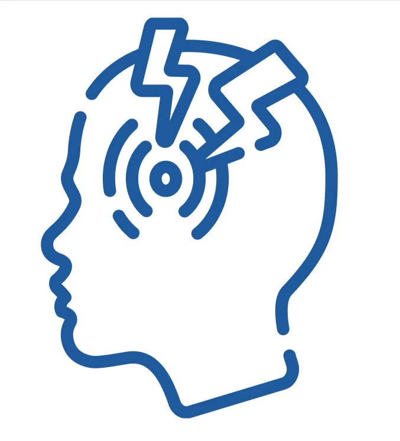

Expert Treatment for Pain, Posture, and Beyond
Whether you’re a young professional, part of a busy family, or enjoying your golden years, we’re here to support your health journey. Dr. Cohen treats patients ranging from newborns to seniors in their 90s, addressing common concerns such as:
-
Neck and Back Pain
Using precise spinal and extra-spinal adjustments, therapeutic exercises, and ergonomic advice, we help relieve pain and restore proper alignment. Additional therapeutic modalities, such as cervical and lumbar traction, posture correction tools, and electric muscle stimulation, may be incorporated to promote healing and prevent future issues.
-

Headaches
Dr. Cohen’s holistic treatment plans focus on reducing headache frequency and severity by addressing underlying spinal issues. Through gentle adjustments, posture improvement strategies, and assisted stretching, he targets tension and improves blood flow to alleviate pain. Nutritional advice and lifestyle adjustments may also be recommended for long-term relief.
-
Radiculopathies into Arms and Legs
Dr. Cohen utilizes advanced techniques such as spinal traction, disc-distraction therapy, and targeted adjustments to relieve pressure on affected nerves. Walking lumbar traction and therapeutic exercises further enhance mobility and reduce discomfort, helping you regain strength and functionality.
-
Poor Posture
Dr. Cohen’s personalized care plans focus on posture correction through spinal adjustments, posture pump therapy, and ergonomic guidance. He provides tailored exercises and stretches to strengthen core and back muscles, promoting better alignment and preventing future strain.